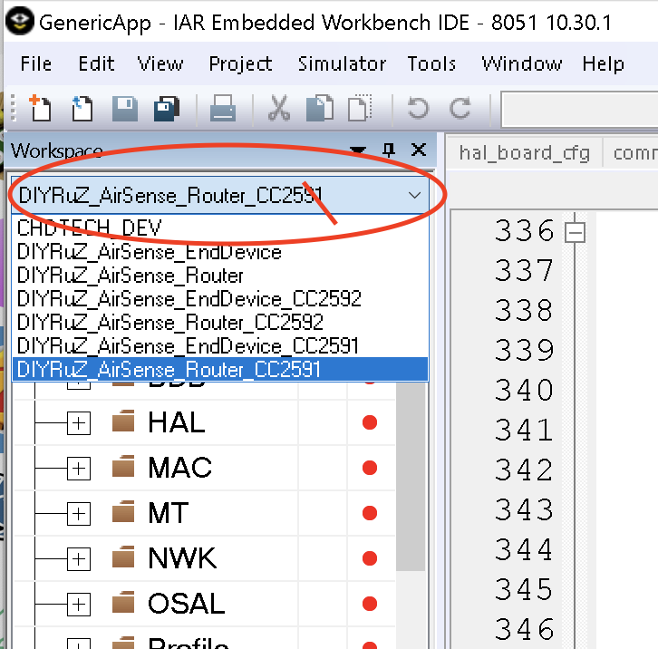
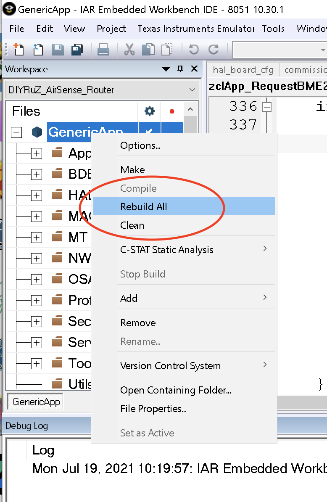

IAR install
Original Russian how-to(OUTDATED VERSION) is without a description of SDK patch applying.
Here you can find machine translation and an additional description of how to apply the SDK patch.
Build Zigbee firmware from source.
In this article, I will try to describe the process of building firmware for Zigbee using the IAR Embedded Workbench® for 8051 IDE.
Foreword:
You must immediately answer the question: why not immediately give the firmware? There are many reasons for this:
- This is contrary to the philosophy of open source: if you want to tweak something, you will not succeed.
- If you find an error/revision/optimization, but the author has abandoned the project for a long time, then without the source code the project will simply “die”.
- If you need to change something very simple, for yourself, even not knowing how to program, you can always figure out which numbers are responsible for what.
- When there is open source, and information on how to put everything together, written in an accessible language, there is always an opportunity to experiment with the settings, to figure out what works and how.
And many other pluses.
To demonstrate the installation, I installed a clean system to show you how to do it from scratch.
Setting up the development environment
The IAR Embedded Workbench will be used as the development environment, where 8051 is the chip architecture, and not the system version, as you might think.
First, you need IAR version 10.30 download from the link

We start, you must select the item "Install IAR Embedded Workbench® for 8051"

When installing IAR, you must select the custom mode:

and uncheck the Dongle drivers installation

When trying to start a project, there may be an error like this:

Therefore, before starting the project, you need to make sure that python is installed. You can check this on the command line:
python –-version
If all is well, it will show the currently installed version of python, as in the example:

If not, then go to install python
 Install it. Be sure to check the "add python **** to path"
Install it. Be sure to check the "add python **** to path"

Install git and a simple client for it.
go in and download git Install, all checkboxes can be left by default.

go to the site https://tortoisegit.org/ We download the program depending on the bitness of the system (well, or just choose 32 bit, it does not play any significant role) If necessary, you can download the Russification. I will not do this in this manual.

Install tortoisegit, after installation, tick the "Run first start wizard" (usually it is by default) By default, the path to git.exe will be written, or you need to specify the path yourself.

You can immediately generate ssh keys "Generate PuTTy key pair":

Press generate, actively move the mouse/press the keys (the person acts as an RNG) After generation, save the "Save private key" the public key (in the figure it starts with "ssh-rsa AA ..."), copy it to the clipboard (you can also save it if necessary "Save public key")

Go to your git account in the SSH keys section
Click "Add new" and paste the previously copied public key.

Install firmware Z-Stack 3.0.2 - this is an SDK for developing firmware.

We answer tricky questions, download.

Install, you can slightly reduce the path to zstack: C:\Z-Stack 3.0.2. There should be no questions here.

Apply SDK patch
After installing the IAR, you should apply the patch to correctly compile the sources.
You can find the patch here
How to install:
- Save 0001-Fixes.patch to your Z-stack working directory (C:\Z-Stack 3.0.2)
- Open console at Z-stack working directory
- Run
git apply 0001-Fixes.patch
Download source code from the repository
An example would be Zigbee CO2 Sensor
and select Code, SSH and click on the copy to clipboard icon:


We go to the computer in zstack: C:\Z-Stack 3.0.2\Projects\zstack\HomeAutomation (if you did not change the path, then first there will be a folder "Texas Instruments")
right mouse button, "Git clone ..."
Put the URL address from the clipboard, current directory, be sure to check the recursive checkbox, this will help to pull together the BME280_driver and zstack-lib dependencies

Success screen:

The IAR Embedded Workbench can now be launched.
Open the project using the Open workspace menu item

We find our folder with the downloaded project, then in the CC2530DB folder we find the project file

Select the correct workspace, DIY_RuZ_[PROJECT NAME] and execute Rebuild All. The profile named CHDTECH_DEV is debugging one and configured for the development board


If you see a bunch of warnings like this:
Warning[w6]: Type conflict for external/entry "putchar", in module ?printf against external/entry in module ?putchar; types have different memory attributes
JUST IGNORE THEM
After successfull compilation firmaware files will be located in firmwares folder